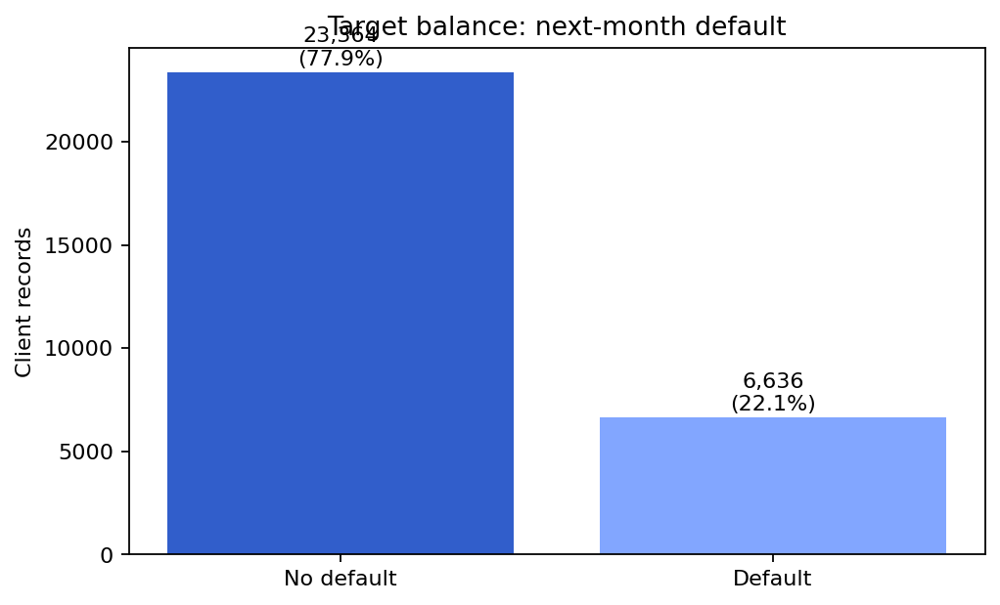

Dataset facts
The source file is the UCI Default of Credit Card Clients dataset. It contains 30,000 historical client records from Taiwan and 25 columns: an identifier, 23 input columns, and the binary next-month default target. The project's audit found no empty cells, no duplicate full rows, and no duplicate client IDs. Those findings describe this supplied CSV; they do not prove the original real-world collection was perfect.

src.credit_risk.showcase.Column families
| Columns | What they represent | Simple example |
|---|---|---|
LIMIT_BAL | Assigned credit limit, in New Taiwan dollars | 100,000 means the client can borrow up to that limit. |
SEX, EDUCATION, MARRIAGE, AGE | Client demographic codes and age | EDUCATION=2 is a dataset code, not a measured amount. |
PAY_0, PAY_2…PAY_6 | Repayment status for the most recent month and previous months | Positive values represent payment delay categories; negative values indicate early payment/revolving credit in the source coding. |
BILL_AMT1…BILL_AMT6 | Statement balance for six months | A recent bill of 20,000 is the amount on the statement. |
PAY_AMT1…PAY_AMT6 | Previous payment amounts for six months | A payment of 2,000 against a 20,000 bill is smaller than the bill. |
default.payment.next.month | Target: 1 for default, 0 otherwise | This is the answer during training, never an input. |
Numerical and categorical inputs
Amounts and age are numerical because their distance has a clear meaning. A limit of 200,000 is twice 100,000. Sex, education, and marriage are categorical codes: code 2 is not “twice” code 1. The pipeline treats them as categories and one-hot encodes them. Repayment status is kept numeric because its ordered delay signal is meaningful to the project’s feature calculations.
What the numbers say at first glance
The average credit limit is 167,484.32 and the median is 140,000. The average age is 35.49 and the median is 34. The difference between mean and median tells us the limit distribution has some higher values pulling the average upward. It is a description, not a reason to delete those records.
Limits of this dataset
It is a snapshot of historical records, not a live bank feed. It does not include income, job changes, transaction behaviour, local economic conditions, customer contact, or the reason someone missed a payment. Dataset codes may have historical and social biases. A high validation score cannot make those omissions disappear.
Why is ID excluded from the model?
An identifier only names a row. It does not describe repayment behaviour. Using it can let a model learn accidental ordering patterns instead of useful signals.
Does 22.12% mean every future lender has that default rate?
No. It is the rate in this historical dataset. A different bank, country, or year can have a different population and rate.